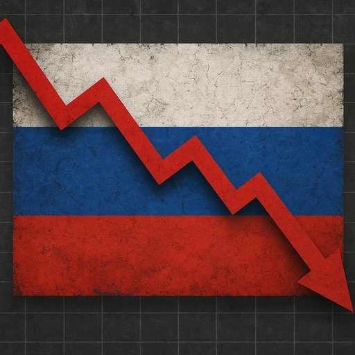

Publicado em 2025-06-03 12:27:43
Por Francisco Gonçalves e Augustus, Maio de 2025
Desde o início da invasão à Ucrânia em 2022, o Ocidente apostou forte nas sanções económicas para sufocar o regime de Putin. Muitos previram o colapso imediato da economia russa. Três anos depois, essa previsão falhou. Mas não se enganem: a resistência tem sido real, mas também profundamente ilusória. A Federação Russa continua em pé, à custa de sacrifícios enormes, de uma economia de guerra e de um isolamento internacional que, lentamente, mina a sua sustentabilidade.
Apesar das sanções, a economia russa cresceu 3,6% em 2023. À primeira vista, um número respeitável. Mas o que sustenta este crescimento? Principalmente o setor militar, a construção civil financiada pelo Estado e as exportações de energia para mercados alternativos como China, Índia e Turquia.
Contudo, trata-se de um crescimento enganador: os setores tecnológicos e de consumo foram devastados, e o país enfrenta uma escassez grave de componentes eletrónicos, semicondutores, bens duráveis e medicamentos.
A economia russa está hoje moldada pelo conflito: empresas adaptadas para produzir armamento, desemprego artificialmente baixo, com mão-de-obra absorvida pelo exército ou setores militares. O Estado injeta liquidez em setores estratégicos, mas à custa de um endividamento crescente e da destruição de setores produtivos não-militares.
A perda do mercado europeu foi em parte compensada por uma aproximação à Ásia. A China tornou-se o principal parceiro comercial da Rússia. Ainda assim, esta relação é desigual. Pequim dita os preços, compra com desconto e revende com lucro. A Rússia tornou-se um fornecedor subordinado.
Desde 2022, centenas de milhares de russos abandonaram o país. Entre eles, estão engenheiros, cientistas, programadores e empreendedores. A chamada "fuga de cérebros" compromete a capacidade futura de inovação e crescimento.
Ao mesmo tempo, grandes empresas estrangeiras abandonaram o mercado russo. O consumo interno está em declínio e a população perde poder de compra face à inflação persistente.
O bloqueio ao acesso ao sistema SWIFT, a restrição a tecnologias de ponta e a proibição de exportação de componentes industriais têm impacto acumulado. O setor aeronáutico, por exemplo, enfrenta enormes dificuldades para manter a frota. O mesmo se passa com os setores automóvel, farmacêutico e telecomunicações.
A estratégia de Putin tem sido clara: manter o regime à custa de tudo. A guerra tornou-se o motor da economia e o cimento da narrativa patriótica. Mas esse motor consome demasiado, e sem uma reconversão pacífica e produtiva, o colapso não é uma questão de "se", mas de "quando".
A economia russa está de pé, mas às custas de uma militarização total, de um isolamento sem precedentes e de uma degradação lenta das bases de uma sociedade moderna. O que se apresenta como força é, na verdade, resistência desesperada. E essa resistência, mais cedo ou mais tarde, esgota-se.
A guerra sustenta o regime, mas destrói a nação. E não há propaganda que eternamente esconda os escombros.